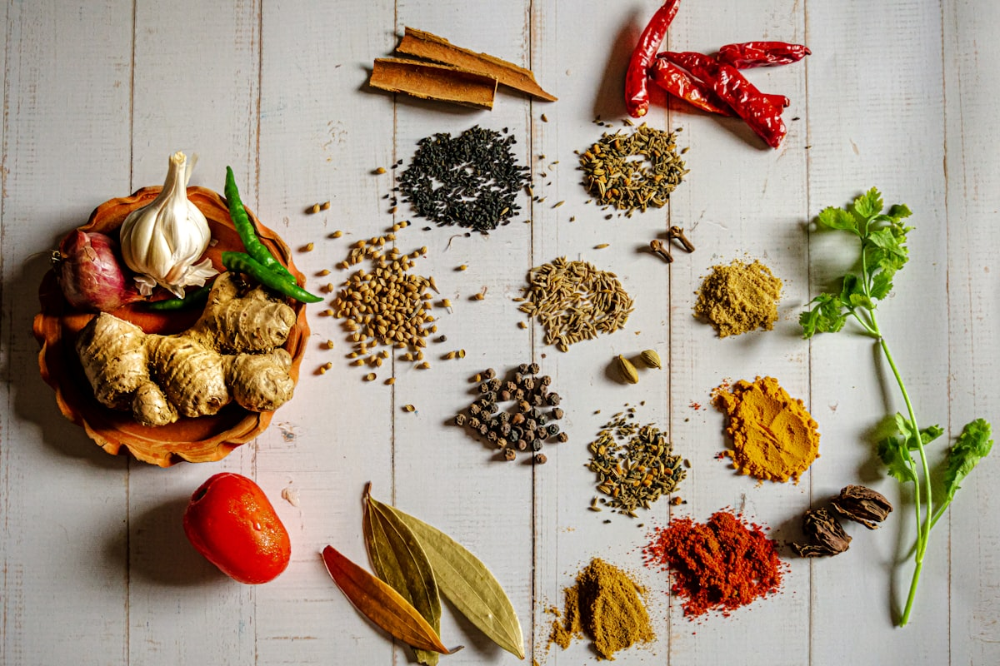

Whole Spice Tempering Science: The Physics of Tarka and Essential Oil Extraction

In South Asian and Middle Eastern culinary traditions, there exists a foundational cooking technique that transforms raw, woody seeds into explosive fountains of aroma: the process known variously as tarka, chaunk, baghaar, or whole spice blooming. Far from being a simple garnish, hot fat tempering is an exacting thermodynamic extraction protocol. By submerging whole dry spices into shimmering culinary lipids heated between 350°F and 420°F, the cook initiates a rapid cascade of cellular lysis, volatile terpene dissolution, and pyrolytic Maillard transformations that redefine the flavor architecture of grain bowls and stews.
The Thermodynamic Principle of Lipid Blooming
The overwhelming majority of aromatic spice compounds (such as cuminaldehyde, allyl isothiocyanate, and anethole) are strictly hydrophobic and lipophilic. Water-based simmering cannot dissolve these compounds effectively. Hot cooking fat serves as an organic solvent that extracts, stabilizes, and evenly disperses these essential oils across the entire dish.
1. Phase Partitioning: Why Water Fails and Oil Succeeds
When whole spices (such as cumin seeds, brown mustard seeds, or green cardamom pods) are simmered directly in water, broth, or tomato sauce, the polar water molecules repel non-polar aromatic terpenes. The essential oils remain trapped within the dense lignified seed coats, resulting in a muted, muddy flavor profile.
Conversely, when dry seeds contact hot culinary fat (such as clarified ghee, cold-pressed sesame oil, or avocado oil):
- Rapid Thermal Cell Wall Rupture: Residual intracellular moisture inside the seed expands violently, turning into steam that fractures the hard outer pericarp from within.
- Hydrophobic Solvent Extraction: As the cell walls rupture, lipophilic essential oils flood directly into the surrounding lipid matrix.
- Volatile Fixation: The lipid molecules form a protective hydrophobic envelope around delicate aromatic terpenes, significantly lowering their rate of atmospheric evaporation and preserving top-note brightness.

Figure 2.1: Whole dry seeds protect delicate interior volatile oils until high-temperature lipid blooming liberates them.2. The Pop and Crackle: Mechanics of Mustard and Cumin Blooming
The signature acoustic indicator of a successful tarka is the rapid, rhythmic popping of whole seeds. This acoustic phenomenon is governed by precise physical thresholds:
| Whole Spice Seed | Key Extracted Terpene | Optimal Blooming Window | Sensory Transformation |
|---|---|---|---|
| Black Mustard (Brassica nigra) | Allyl Isothiocyanate (Sinigrin) | 375°F – 400°F (8 – 12 sec) | Harsh pungent bite softens into nutty, toasted complexity |
| Cumin Seed (Cuminum cyminum) | Cuminaldehyde & Cymene | 340°F – 365°F (12 – 15 sec) | Raw grassy notes convert into rich, earthy roasted aromatics |
| Fennel Seed (Foeniculum vulgare) | Trans-Anethole & Fenchone | 330°F – 350°F (10 – 14 sec) | Sweet licorice blooms and pairs with savory fats |
| Fenugreek Seed (Trigonella foenum) | Sotolon & Lactones | 320°F – 340°F (5 – 8 sec) | Maple-curry aroma; burns quickly into extreme bitterness if overheated |
3. The Precision Sequence Protocol: Staggering Additions by Thermal Mass
A fatal error in whole-spice tempering is dumping all spices into the hot skillet simultaneously. Different spices possess vastly different surface-to-volume ratios, moisture contents, and thermal burning thresholds.
To achieve peak flavor extraction without scorching delicate leaves, follow the Four-Stage Staggered Tempering Sequence:
- Stage 1 – Hard Pericarp Seeds (T = 0s): Add whole brown mustard seeds and dried red chili pods to 390°F oil. Cover with a splatter screen until popping begins (approx. 5 seconds).
- Stage 2 – Soft Aromatic Seeds (T = 6s): Add whole cumin, fennel, and crushed coriander seeds. Lower heat slightly as seeds turn from pale straw to deep amber.
- Stage 3 – Fresh Botanical Aromatics (T = 12s): Add fresh curry leaves, sliced garlic, and slivered ginger. Moisture in the fresh aromatics flashes into steam, dropping pan temperature and preventing seed scorching.
- Stage 4 – Delicate Powders & Finishing Bloom (T = 18s): Remove pan completely from heat source and stir in ground turmeric, Kashmiri chili powder, or asafoetida (hing). The residual thermal mass of the oil blooms the powders within 3 seconds without burning.
 Figure 2.2: Drizzling hot lipid tarka over cool grains creates an intoxicating crackle and coats every fiber in aromatic oils.
Figure 2.2: Drizzling hot lipid tarka over cool grains creates an intoxicating crackle and coats every fiber in aromatic oils.
4. Fat Selection: Smoke Points, Fatty Acid Profiles, and Terpene Binding
The medium chosen for tempering directly impacts volatile solubility and flavor clarity:
- Clarified Butter (Ghee - Smoke Point 485°F): The absence of water and milk solids allows high thermal thresholds, while butyric acid and short-chain fatty acids provide an opulent, nutty foundation that bonds exceptionally with cumin and cardamom.
- Refined Mustard Oil (Smoke Point 480°F): High in monounsaturated erucic acid; when heated until lightly smoking, its natural pungency volatilizes off, leaving an earthy, pungent sharpness perfect for winter brassicas and root bowls.
- Cold-Pressed Sesame Oil (Smoke Point 350°F – 410°F): Rich in sesamol antioxidants that stabilize essential oils against thermal degradation, imparting toasted nutty undertones.
5. The Immediate Pour: Capturing Aerosolized Volatiles
Once the tempering cascade reaches its aromatic peak, the hot oil must be poured immediately over the waiting dish (such as a cooked quinoa bowl, lentil dal, or roasted vegetable platter).
The violent sizzle that occurs when the 380°F oil contacts the moist surface of the food is a functional culinary event: the rapid steam generation carries volatile aromatic terpenes upward in a micro-droplet aerosol cloud, filling the dining space with intoxicating fragrance while coating the cooler grains in a glossy, flavor-packed lipid film.
6. Common Tempering Pitfalls and How to Avoid Them
Mastering tarka requires vigilant sensory observation:
- Under-Heating the Oil: If oil temperature is below 320°F, seeds will simply absorb oil without popping or fracturing cell walls, producing greasy, raw-tasting seeds.
- Over-Heating & Scorching: If seeds turn black rather than deep amber, proteins have undergone irreversible pyrolysis. Discard the batch and restart; scorched bitter compounds cannot be masked.
- Trapped Water Splatters: Ensure whole seeds and whole chilies are completely dry before adding to hot fat to prevent violent steam explosions.
7. The Neurobiology of Tempering Aromas: Retro-Nasal Olfaction
When you consume a dish enriched with hot-bloomed spices, the fat-bound terpenes undergo gradual dissociation in the warmth of your mouth (approx. 98.6°F / 37°C). As the lipid film coats your tongue and palate, volatile molecules are transported via the retro-nasal passage into the nasal cavity, providing continuous olfactory stimulation for up to ten minutes after swallowing.
8. Frequently Asked Questions on Whole Spice Tempering
Can olive oil be used for whole spice tempering?
Extra virgin olive oil has a lower smoke point (around 375°F) and contains delicate polyphenols that can degrade under high heat. If using olive oil, keep temperatures moderate and prioritize fast-blooming spices like cumin and crushed coriander rather than hard mustard seeds.
Why do curry leaves splatter so aggressively in hot oil?
Fresh curry leaves possess high surface moisture and water-filled internal vacuoles. When immersed in 380°F oil, this water vaporizes into steam instantaneously, creating acoustic crackles and splatters. Using a splatter screen prevents mess while capturing aromatic steam.
What is the shelf life of a pre-made spiced tempering oil?
Because whole spices are heat-sterilized in pure fat during blooming, a strained tempering oil stored in a sterilized, airtight glass container will keep its aromatic intensity for up to three weeks at room temperature away from direct sunlight.
Key Scientific Takeaways
- Whole spice blooming in hot fat extracts lipophilic terpenes that are insoluble in water-based broths.
- Stagger additions by thermal mass: hard mustard seeds first, soft seeds second, fresh aromatics third, delicate powders last.
- Mustard seeds pop as internal moisture flashes into steam, shattering the outer pericarp.
- Immediate pouring onto warm grain bowls aerosolizes aromatic volatiles and encapsulates grains in spiced lipids.